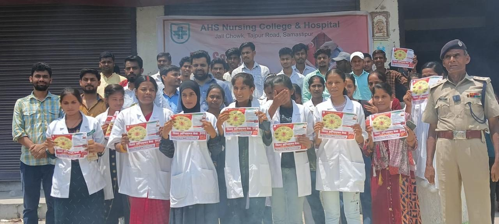

Moments we celebrate.
Awards, functions, competitions and training programmes — album by album.
Government of Bihar Award
AHS Nursing College was honoured as Best Mentee Nursing College of Bihar, and for taking INC affiliation.
When ten patients arrive at once, our students know what to do.
A one-day emergency trauma camp on the AHS Nursing College campus. Students practised triage, casualty handling, safe transfers and CPR in a live mass-casualty simulation.
Led by Dr Kamran ul Haque
Emergency Medicine Specialist, Max Hospital, Delhi
The briefing
Students are briefed on how to respond when many patients arrive at once.
The alarm
Casualties arrive — students rush to their stations and prepare beds.
Life support
Teams start CPR and stabilise the most critical patients first.
Inter-Team Rangoli Competition
On Independence Day, student teams created rangolis on themes of nursing and healthcare — including “Nurses are the heart of healthcare”.
Visit of the Hon’ble Chancellor
Ahmad Ashfaque Karim, MP (Rajya Sabha) and Chancellor of Al-Karim University, visited the college and hospital, including the wards and NICU.
National Nutrition Week
Students prepared and displayed healthy diet charts and nutritious dishes, and the celebration was covered in the local press.
Ready for emergencies, not just exams.
With the Bihar Fire Service, our students train in fire safety, first aid and rescue — skills every nurse needs on day one.
Fire safety drill
Students put out a live fire with extinguishers, guided by the Bihar Fire Service.
How to use an extinguisher
A fire officer demonstrates the right technique, step by step, on campus.
Choking first-aid training
Fire service trainers teach the abdominal-thrust (Heimlich) technique.
Rescue & casualty carry
Students practise lifting and carrying a casualty to safety.

Fire safety awareness drive
Students spread Bihar Fire Service safety leaflets with fire officers at Jail Chowk.
More moments
Functions, clinical batches and everyday life at AHS.